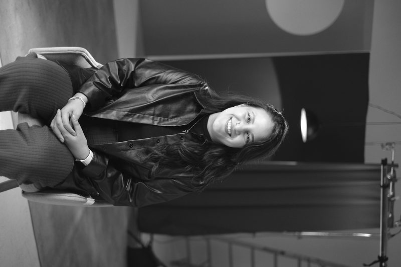
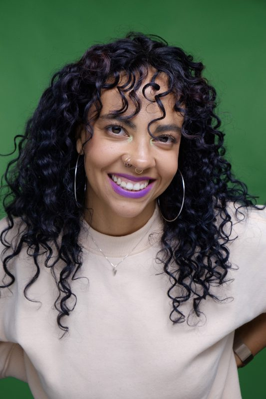
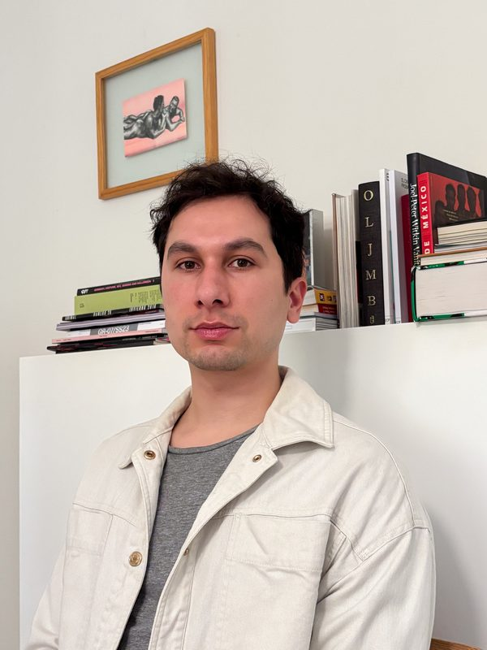
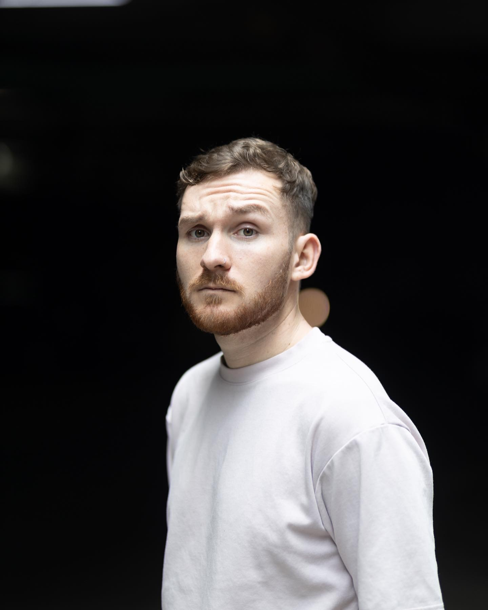
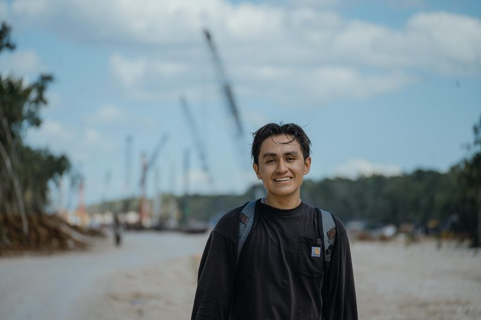
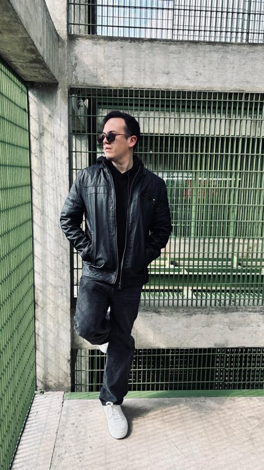
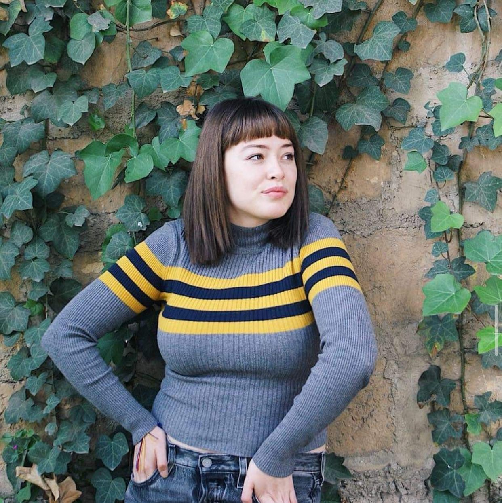
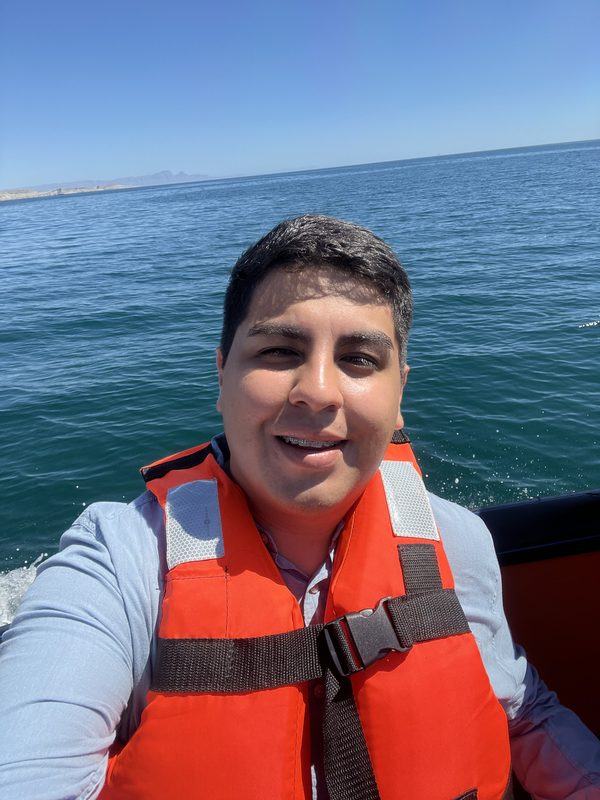
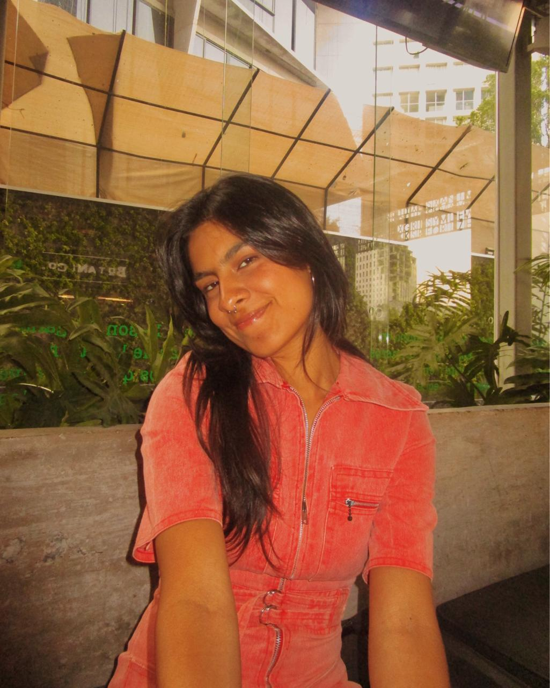
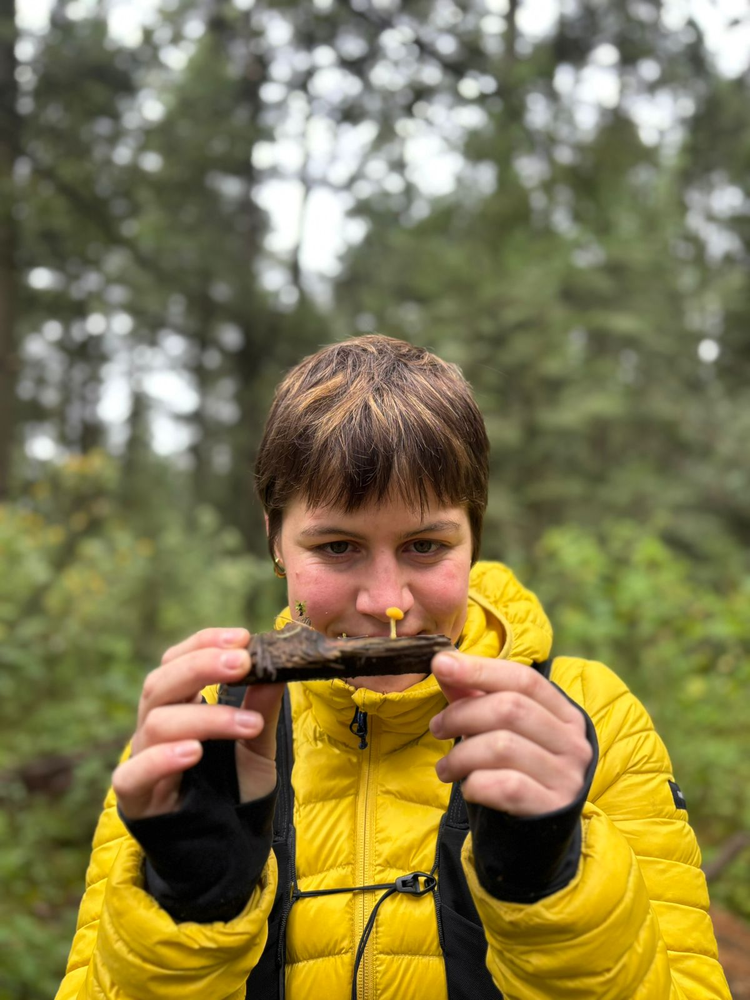

Primer Cohorte
Once creadores de América Latina — periodistas, activistas, científicos, artistas — que se reunieron para producir narrativas económicas con rigor, creatividad e impacto público.
Abril — Mayo 2026 · Online + Ciudad de México
La comunidad
Quiénes lo hicieron posible

Ciudad de México
Mayneé Cortez
Psicóloga · Educación emocional
Psicóloga y fundadora de Laboratorio afectivo, un espacio dedicado a la educación emocional. Su trabajo se caracteriza por cuestionar los modelos tradicionales de la psicología, integrando una mirada crítica sobre cómo el contexto político, social y económico afecta al bienestar individual. También co-coordina el Círculo neurodivergente y el Dojo afectivo, clínica y espacio físico en la CDMX.
Ciudad de México
Rodrigo Balvanera
Analista político · Comunicador
Analista político y fundador de Balva News, una plataforma dedicada a explicar la política de Estados Unidos para audiencias hispanohablantes. Con una maestría en Ciencia Política en Washington D.C., colabora con el Democratic Erosion Consortium y participa en medios como France 24, NTN24 y Radio Fórmula.

Ciudad de México
Valeria Angola
Investigadora · Activista · Comunicadora
Co-fundadora del proyecto Afrochingonas, un espacio autogestivo liderado por mujeres afromexicanas que busca construir narrativas desde la experiencia y resistencia de los cuerpos racializados en México. Cree en el movimiento y la acción como forma de pensamiento.

Ciudad de México
Emmal Brunel
Activista · Creadora de contenido
Estudia y genera contenido sobre el auge de las derechas, el punitivismo y la cultura de la cancelación. Sus enfoques de militancia son las disidencias sexuales y las luchas antisistema. En lo profesional, coordina un fondo que acompaña proyectos que contribuyen a las democracias.

Ciudad de México
Diego Madrigal
Comunicador · Creador digital
Comunicador y creador especializado en música urbana latina y cultura juvenil. Ha construido una audiencia de más de un millón de seguidores en plataformas digitales. Su trabajo combina investigación, storytelling y tendencias digitales para explorar el impacto cultural de artistas y movimientos musicales emergentes.

Quintana Roo
Miguel Ángel Guillermo
Fotógrafo · Videógrafo · Activista ambiental
Fotógrafo, videógrafo y activista ambiental originario de Cancún, con más de 10 años de experiencia en buceo. Su trabajo documenta los ecosistemas subacuáticos del Caribe Mexicano y el gran acuífero maya, combinando el fotoperiodismo con una postura activa de defensa territorial. Ha publicado en MongabayLatam.

Ciudad de México
Adrián Chávez
Escritor · Traductor · Divulgador
Escritor, traductor, profesor y divulgador mexicano. Autor del Manual del español incorrecto (Aguilar, 2024) y Cómo mentir en internet (Aguilar, 2025). Su canal en redes sociales, @nochaveznada, cuenta con más de 800 mil seguidores.

Ciudad de México
Arantza García
Periodista · Educadora digital
Periodista y creadora del espacio educativo @EsParaMiTarea, una plataforma de aprendizaje colectivo en redes sociales. Su trabajo parte de la convicción de que la educación es una herramienta para abrir horizontes y transformar realidades. Le apasiona la radio, las historias y todo lo que nos permite entendernos mejor.

Sinaloa
Filiberto Iribe Varela
Ingeniero ambiental · Activista climático
Ingeniero ambiental, creador de contenido y activista originario de Culiacán. Fundó Greengold México y Más Acciones MX, colectivo que ha beneficiado a más de 9,000 personas. Con más de 400 mil seguidores, ha sido reconocido con el Premio Rafael Buelna Tenorio y el Mérito Ecológico Sinaloa 2021.

Guadalajara
Mar Medina López
Urbanista · Activista de movilidad
Urbanista en formación, ciclista y peatona, radicada en Guadalajara. Desde Marea Urbana impulsa una mirada por ciudades más empáticas y por la justa redistribución de la riqueza, entendiendo la movilidad como un derecho colectivo y herramienta de transformación social.

Latinoamérica · Londres
Sofía Probert
Bióloga · Artista multidisciplinaria
Bióloga y artista multidisciplinaria enfocada en la sensibilización ambiental. Ha acompañado proyectos de defensa del territorio y comunicación ambiental desde la expresión artística. Ha ilustrado para The New York Times Magazine, Greenpeace, Climate Reality Project, Netflix, el Museo de Ciencia y Arte de la UNAM, y ha expuesto en distintos países de Latinoamérica e Inglaterra.
¿Quieres saber cómo funciona Arena?
Conocer el programa